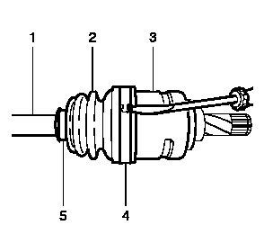
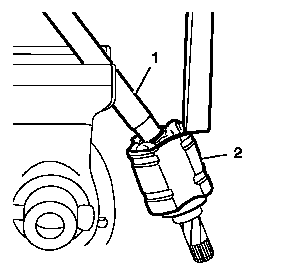
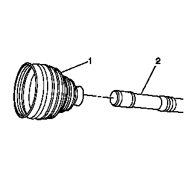
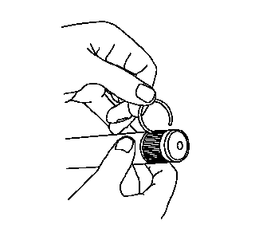
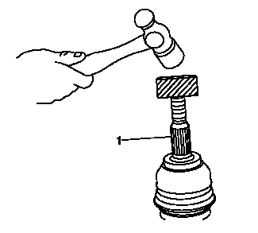
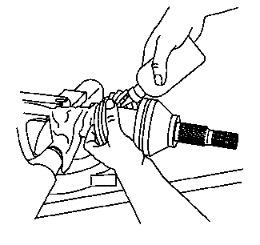
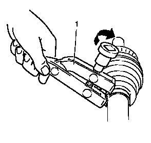

前轮驱动轴内万向节和护套的更换（三销式万向节）
专用工具
•
CH-804
张紧器
当地同等工具：
专用工具
拆卸程序
1.
前轮驱动轴»拆下－
前轮驱动半轴的更换－左侧
、
前轮驱动半轴的更换－右侧
、
前轮驱动半轴的更换－右侧（不带中间轴）

2.
拆下并报废前轮驱动轴内侧万向节护套内卡箍 (4) 和外卡箍 (5)。使用尖头工具撬出前轮驱动轴内侧万向节护套内卡箍 (4)。
3.
将前轮驱动轴内侧万向节护套 (2) 移至一旁。
4.
清洁前轮驱动轴内侧万向节 (3) 和前轮驱动轴 (1) 的旧油脂。

注意:
夹紧至老虎钳前，使用保护性钳口或布保护前轮驱动轴。
5.
将前轮驱动轴 (1) 尽可能垂直地夹紧至老虎钳内并将前轮驱动轴内侧万向节 (2) 尽可能高地定位至老虎钳。
6.
如图所示，通过敲击轴承前部内的内侧万向节壳体 (2)，将内侧万向节 (2) 从车轮驱动轴 (1) 上拆下。使用铜棒和锤子。
7.
当内侧万向节壳体 (2) 从第一轴承上滑下时，在至第二轴承的相同位置（参见步骤5）旋转车轮驱动轴并继续进行步骤6。
8.
当内侧万向节壳体 (2) 从第二轴承上滑下时，在至第三轴承的相同位置（参见步骤5）旋转车轮驱动轴并继续进行步骤6直到万向节壳体完全滑下。

9.
将前轮驱动轴内侧万向节护套 (1) 从前轮驱动轴 (2) 上拆下并报废。

10.
将卡环从前轮驱动轴内侧万向节上拆下并报废。
安装程序
1.
将新的卡环安装至前轮驱动轴内侧万向节上。开始将卡环从前轮驱动轴内侧万向节端部向下拉至卡环槽。
2.
将新前轮驱动轴内侧万向节护套 (1) 松弛地安装至前轮驱动轴 (2)。

注意:
夹紧至老虎钳前，使用保护性钳口或布保护前轮驱动轴。
3.
将前轮驱动轴垂直夹紧至老虎钳内。
4.
使用木块和锤子将前轮驱动轴内侧万向节 (1) 安装至前轮驱动轴。

5.
将大约一半的与维修组件一起运送的油脂置于前轮驱动轴内侧万向节内，并用剩余油脂加注前轮驱动轴内侧万向节护套。
告诫：
在对车轮驱动轴或其附近进行维修的任何时候，都应保护车轮驱动轴护套、密封件和卡箍免于接触尖锐物体。如果护套、密封件或卡箍损坏，则可能会导致润滑油从万向节漏出，造成车轮驱动轴噪声增大且出现故障。
6.
将新前轮驱动轴内侧万向节护套 (2) 置于内侧万向节 (3)。

8.
使用
CH-804
张紧器
(1)，压接新前轮驱动轴护套外卡箍和新内卡箍。紧固工具至
25 N•m (18 lb ft)
。
9.
清除所有泄漏出的多余油脂。
10.
前轮驱动轴»安装－
前轮驱动半轴的更换－左侧
、
前轮驱动半轴的更换－右侧
、
前轮驱动半轴的更换－右侧（不带中间轴）